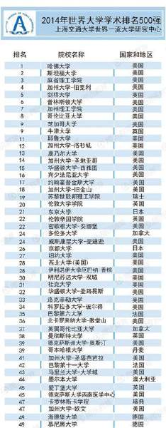

Conversation with 81184027 at Sat 16 Aug 2014 07:41:53 PM CST on 154115835 (webqq)
(08/16/2014 07:00:37 PM) 小绵羊: 现在怎么样啦?有危害么?
(08/16/2014 06:59:46 PM) 紫罗兰: (#199374)@小绵羊 那里不多呢
(08/16/2014 06:59:50 PM) 潮哥: (#199375)我妈就信全能神
(08/16/2014 06:59:56 PM) 潮哥: (#199376)劝不过来
(08/16/2014 07:00:55 PM) 潮哥: 管不了啊，随她了，自己开心就行
(08/16/2014 07:00:59 PM) 潮哥: 又不离家出走
(08/16/2014 07:01:32 PM) 小绵羊: 你过得很开心?
(08/16/2014 07:02:40 PM) 紫罗兰: 我很开心、
(08/16/2014 07:03:57 PM) 潮哥: :强:
(08/16/2014 07:06:20 PM) 小绵羊: 你允许她继续沉浸在邪教的幸福泥潭中?继续聚会，继续带出更多的信徒，继续交通真理，继续奉献?
(08/16/2014 07:08:08 PM) 潮哥: 我也没办法啊
(08/16/2014 07:08:13 PM) 潮哥: 鞭长莫及
(08/16/2014 07:09:41 PM) 小绵羊: 你认为不理，油着她就是为她好?我们建议:不是不管理，而是方法策略问题!
(08/16/2014 07:12:51 PM) 潮哥: 不在老家没法管
(08/16/2014 07:21:04 PM) 紫罗兰: :|
(07:37:34 PM) 小绵羊: 很多人信奉邪教，要让其成功地走出来，比较有效的说法是"心病还须心药来治"!
(07:38:08 PM) 紫罗兰: 何来心药
(07:38:23 PM) 2476871775: 劳动
(07:39:03 PM) 2476871775: 心脑，身体四肢同时运作
(07:39:10 PM) 紫罗兰: 如何让她服药
(08/16/2014 07:00:37 PM) 小绵羊: 现在怎么样啦?有危害么?
(08/16/2014 06:59:46 PM) 紫罗兰: (#199374)@小绵羊 那里不多呢
(08/16/2014 06:59:50 PM) 潮哥: (#199375)我妈就信全能神
(08/16/2014 06:59:56 PM) 潮哥: (#199376)劝不过来
(08/16/2014 07:00:55 PM) 潮哥: 管不了啊，随她了，自己开心就行
(08/16/2014 07:00:59 PM) 潮哥: 又不离家出走
(08/16/2014 07:01:32 PM) 小绵羊: 你过得很开心?
(08/16/2014 07:02:40 PM) 紫罗兰: 我很开心、
(08/16/2014 07:03:57 PM) 潮哥: :强:
(08/16/2014 07:06:20 PM) 小绵羊: 你允许她继续沉浸在邪教的幸福泥潭中?继续聚会，继续带出更多的信徒，继续交通真理，继续奉献?
(08/16/2014 07:08:08 PM) 潮哥: 我也没办法啊
(08/16/2014 07:08:13 PM) 潮哥: 鞭长莫及
(08/16/2014 07:09:41 PM) 小绵羊: 你认为不理，油着她就是为她好?我们建议:不是不管理，而是方法策略问题!
(08/16/2014 07:12:51 PM) 潮哥: 不在老家没法管
(08/16/2014 07:21:04 PM) 紫罗兰: :|
(07:37:34 PM) 小绵羊: 很多人信奉邪教，要让其成功地走出来，比较有效的说法是"心病还须心药来治"!
(07:38:08 PM) 紫罗兰: 何来心药
(07:38:23 PM) 此去经年: 劳动
(07:39:03 PM) 此去经年: 心脑，身体四肢同时运作
(07:39:10 PM) 紫罗兰: 如何让她服药
(07:46:25 PM) 光: 其实宗教每天的忏悔啊，祷告啊，还说经忏啊，还有日常的修行，都是在改变一个人的认知和生活习惯
(07:46:48 PM) 光: (07:46:25 PM) 光: 其实宗教每天的忏悔啊，祷告啊，还有经忏啊，还有日常的修行，都是在改变一个人的认知和生活习惯
(07:47:12 PM) 光: 所以很多人信了某种宗教之后人就变了
(07:50:18 PM) 蛋包飯: :D不错
(07:47:14 PM) 光: 就是这样的
(07:47:17 PM) 光: 嗯
(07:50:27 PM) 蛋包飯: 祷告是一种习惯
(07:50:38 PM) 蛋包飯: 一种好习惯
(07:47:38 PM) 光: 嗯
(07:47:53 PM) 光: 用一种新的习惯代替旧的习惯
(07:48:03 PM) 光: 用一个新的朋友圈代替旧的朋友圈
(07:48:08 PM) 光: 改变就开始了
(07:48:43 PM) 光: 当然这个改变的决心是要自己下的
(07:48:49 PM) 光: 强迫不来的
(07:52:33 PM) 紫罗兰: :)
(07:49:36 PM) 光: :face14:
(07:52:54 PM) 蛋包飯: 宗教是从内在改变一个人
(07:53:02 PM) 蛋包飯: 从内心改变
(07:53:05 PM) 紫罗兰: 听着就是这么回事，执行起难度大
(07:58:47 PM) 醒悟: :D
(08:00:11 PM) 醒悟: 包饭华为荣耀c3也不差
(08:01:01 PM) 紫罗兰: 是 华为荣耀3C
(08:01:03 PM) 紫罗兰: 吧
(08:10:24 PM) 福建-福州&水浒:
(08:10:43 PM) 福建-福州&水浒: http://v.youku.com/v_show/id_XNDgxNDg2MzY4.html
(08:14:35 PM) 蛋包飯: 中国首届自慰大赛
(08:14:51 PM) 蛋包飯: 拍的遮遮掩掩，不够大方
(08:16:19 PM) 紫罗兰: --b
(08:17:37 PM) 蛋包飯: 用充气娃娃太低劣了
(08:19:24 PM) 蛋包飯: 对中学生或许可以。对于成年男子这种方法不适用。
(08:19:29 PM) 苹果: :)
(08:31:14 PM) 蛋包飯: 一部高档手机，70％ 的功能是没用的；一款高档轿车，70％ 的速度是多余的；一幢豪华别墅，70％ 的面积是空闲的；一堆公务人员，70% 是混饭吃的；一所大学里，70％ 的教授是扯淡的；一大堆社会活动，70％ 是无聊空虚的；一屋子衣物用品，70％ 是闲置没用的；一辈子挣钱再多，70％ 是留给别人花的。 结论：生活简单明了，享受人生,守住30％ 便好。
(09:01:40 PM) 光: 嗯
(09:01:56 PM) 光: 生活本来就是可以很简单
(09:02:39 PM) 光: 主要是人有一种毛病，看到的东西都像占为己有
(09:02:43 PM) 光: 想
(09:02:55 PM) 光: 所以生活才会变得辛苦
(09:09:34 PM) 紫罗兰: 谁不想让生活过更富有
(09:10:03 PM) 紫罗兰: 是人都有这想法，除了全能神信徒
(09:20:32 PM) 光: 嗯
(09:20:41 PM) 光: 所以就有争夺了
(09:20:57 PM) 光: 因为大多谁的喜好的都差不多
(09:21:00 PM) 光: 而资源有限
(09:24:07 PM) 紫罗兰: 所以就有了今天这局面
(09:21:20 PM) 光: 好像有些人
(09:21:28 PM) 光: 遇到东西就想买
(09:21:36 PM) 光: 结果买了一屋子
(09:24:43 PM) 紫罗兰: 嗯
(09:21:44 PM) 光: 最后自己没地方睡觉了
(09:21:48 PM) 光: 全是东西
(09:24:54 PM) 紫罗兰: 女孩特别
(09:21:59 PM) 光: 但是实际上呢
(09:25:05 PM) 紫罗兰: 哈哈，那也是一种幸福
(09:22:03 PM) 光: 是不是这些都是必须的
(09:22:16 PM) 光: 其实不用过多久
(09:25:30 PM) 紫罗兰: 必须，坐车都不必要了
(09:22:32 PM) 光: 慢慢的他就发现买来的东西大多都是不常用的
(09:25:38 PM) 紫罗兰: 因为你可以走路呀
(09:25:45 PM) 紫罗兰: 哈哈
(09:22:46 PM) 光: 嗯
(09:22:58 PM) 光: 最后就要开始清理垃圾了
(09:23:05 PM) 光: 清理闲置用品
(09:23:19 PM) 光: 这些闲置用品当初都是花真金白银买回来的
(09:23:37 PM) 光: 有很多其实还很新没用过几次
(09:26:41 PM) 紫罗兰: (#199457)成了垃圾
(09:23:41 PM) 光: 或者一次都没用过
(09:23:45 PM) 光: 是啊
(09:23:48 PM) 光: 我就是这样的
(09:23:52 PM) lost message from #199461 to #199461
(09:26:56 PM) 紫罗兰: 我有体会
(09:27:02 PM) 紫罗兰: :p
(09:24:18 PM) 光: 我的书很多啊
(09:24:28 PM) 光: 我的屋子到处都是书
(09:24:35 PM) 光: 虽然好久没买书了
(09:24:50 PM) 光: 但是以前买的就已经把我的屋子塞满了
(09:25:18 PM) 光: 我只是用我买书的这个癖好，去推一下其他人
(09:25:21 PM) 光: 估计也是如此
(09:25:50 PM) 光: 现在我看到这些书，感觉有点头大
(09:25:55 PM) 光: 我当初怎么买这么多书呢
(09:29:50 PM) 醒悟: 现在电子书了不用买啦
(09:27:29 PM) 光: 嗯
(09:27:31 PM) 光: 对啊
(09:30:40 PM) 紫罗兰: 我以前就买杂志
(09:27:36 PM) 光: 很久没买了
(09:30:43 PM) 紫罗兰: 现在不买了
(09:31:42 PM) 紫罗兰: 觉得当时买书很笨
(09:32:16 PM) 醒悟: 造订书机的厂都快关门啦
(09:29:25 PM) 光: 嗯
(10:10:37 PM) pastorqi: 8月16日,2014年第228天
天天主恩惠,福满溢灵程!
愿我们收获活水吗哪，向神发出感谢赞美
旧约 尼 11：1-12：26
诗 34：11-22
箴 21：14-16
新约 林前 10：14-11：12
(10:11:12 PM) 福建-福州&水浒: 感谢主，阿门～
(10:12:34 PM) 福建-福州&水浒: :D
(10:12:44 PM) 福建-福州&水浒: 出来唠嗑
(10:15:08 PM) 福建-福州&水浒:
(10:15:23 PM) 自力: 我居然是悲情浪漫主义者
(10:16:01 PM) 此去经年: 我也是
(10:16:16 PM) 福建-福州&水浒: 我有精神分裂症
(10:16:20 PM) 自力: 你是女生
(10:16:23 PM) 自力: 我是男生。。
(10:16:31 PM) 自力: 你感觉测试结果符合不
(10:16:32 PM) 福建-福州&水浒: 时而开心时而难过:$
(10:16:42 PM) 自力: 我测试的是36题
(10:16:49 PM) 自力: 你去测试看看 @心碎乌托邦
(10:16:59 PM) 福建-福州&水浒: 嗯
(10:18:02 PM) 自力: http://www.apesk.com/ninehouse/
(10:29:24 PM) 此去经年: 那个没用的
(10:29:49 PM) 自力: 怎么说
(10:34:37 PM) 此去经年:
(11:07:11 PM) 紫罗兰: 夜宵
(11:40:31 PM) 此去经年: “人生在世，自当狂狷不羁，莫恨穷通修短，西奥数载，且看吾辈！”这不是《古文观止》的名篇，也不是高考满分作文，而是今年中国西部数学邀请赛开幕式上一位女学霸的开幕发言，不仅如此，她还将生涩难懂的文言文发言翻译成英语，让在场外国选手惊叹不已。
(11:42:54 PM) 此去经年: 
(11:59:44 PM) The account has disconnected and you are no longer in this chat. You will automatically rejoin the chat when the account reconnects.